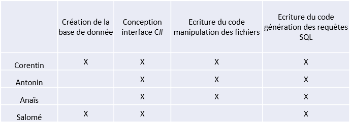

AP 2.1 GENERATEUR SQL
L’objectif de ce projet est d’obtenir une base de données MySql, ayant la même structure que la base Access FLFS.mdb existante, et remplie avec les données contenues dans les fichiers texte existants. Et pour éviter des traitements longs et répétitifs, il a été décidé de réaliser une application ("Générateur SQL") qui automatisera les tâches de génération des scripts SQL
Mise en commun avec le tableau de synthese
Gérer le patrimoine informatique
on a en tant que ressources numériques : le cahier des charges, La base de données Access, L'application en C#, Les fiches notions et exemples relatives à la syntaxe du LMD et LDD de SQL et La base de données Access.
Répondre aux incidents et aux demandes d’assistance et d’évolution
Dans le cadre de la M2L (Maison des Ligues), une décision a été prise pour publier les données des résultats des matchs de la Fédération Lorraine de FutSal (football en salle) au moyen d'une application Web. L’application web est donc déjà existante. Il faudra Via les données enregistrer dans les documents texte, il est possible via l’application ‘générateur SQL’ de fournir des scripts SQL permettant d’avoir dans une base de données, les différents résultats de match ainsi que les arbitres, catégories, clubs… L’application web peut désormais afficher les données relatives aux matchs. C’est donc l’évolution attendu pour cette application.
Travailler en mode projet
Grace au cahier des charges, une listes des taches nous a été donné. On les a donc analysés pour définir les ressources nécessaires puis on les a mise dans un tableau.
Grace au tableau et aux taches on a donc attribué ce que devait faire les personnes du groupe. Puis cela a permis de nous organiser et finir l’AP dans les temps.

Mettre à disposition des utilisateurs un service informatique
Dans le cadre de cet AP, le service qui leur est mis à disposition est un générateur SQL qui leur permet, de convertir des données textuelles en script permettant de remplir une base de données